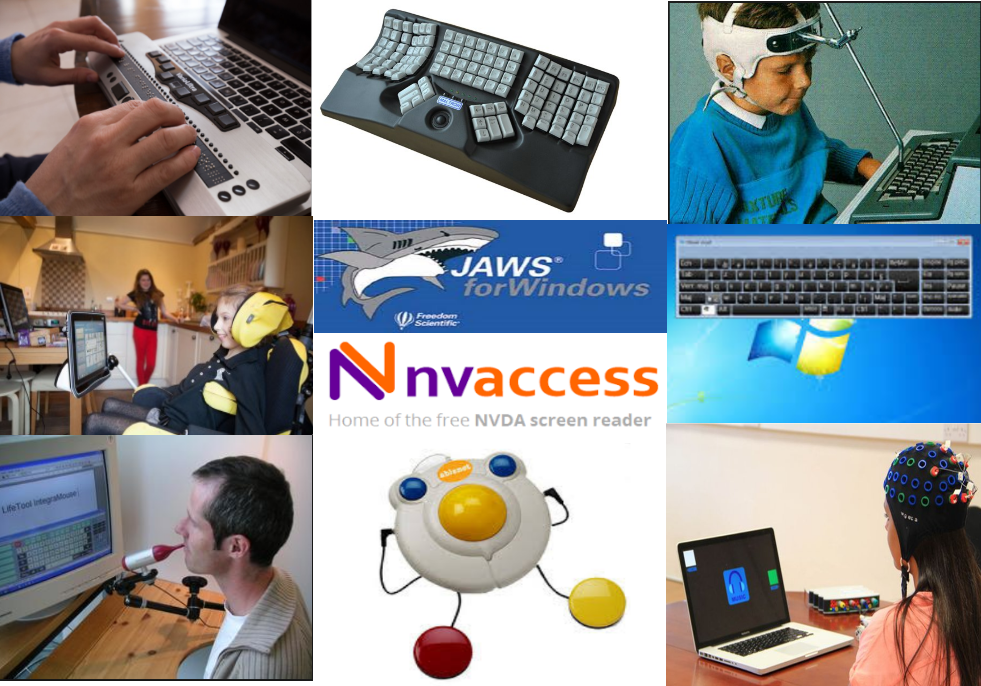

Accessibilité numérique au Cnam
Introduction
Plan
- Accessibilité numérique et handicap
- Normes, législation et réglementation
- Bénéfices de l’Accesssibilité numérique
- Intégrer l’accessibilité dans une structure : L’utilisateur au centre des préoccupations
Une définition fondatrice du handicap
« Par personnes handicapées on entend des personnes qui présentent des incapacités physiques, mentales, intellectuelles ou sensorielles durables dont l’interaction avec diverses barrières peut faire obstacle à leur pleine et effective participation à la société sur la base de l’égalité avec les autres »Article premier, Convention relative aux droits des personnes handicapées
Texte intégral de la Convention relative aux droits des personnes handicapées
Inclusivité
L’accessibilité, c’est permettre aux personnes handicapées de jouir pleinement de leurs droits et de leurs libertés fondamentales en levant les barrières qu'elles peuvent rencontrer.
L’accessibilité numérique s’inscrit dans cette démarche d’égalité et constitue un enjeu politique et social essentiel afin de garantir à tous, sans discrimination, le même accès à l’information et aux services en ligne.
Handicap en France
12 millions
de personnes concernées
= 1 personne sur 5.
20% de la population.
Sources : Chiffres du handicap 2014 Enquête Vie quotidienne et santé, INSEEUne diversité de handicaps
Handicaps physiques et sensoriels :
- visuels,
- auditifs,
- moteurs.
Handicaps mentaux :
- handicaps intellectuels,
- handicaps cognitifs (troubles DYS, daltonisme, etc.),
- handicaps psychiques.
Polyhandicap : un handicap moteur ou sensoriel + mental ; Troubles de santé invalidants : cancer, douleurs chroniques, allergies…
Chaque personne est différente.
Une pluralité d'outils
Il existe de très nombreuses aides techniques (ou technologies d'assistance) :
- plage braille,
- clavier monomanuel,
- head-stick,
- eye tracker,
- lecteur d’écran,
- clavier visuel,
- contacteur au souffle,
- trackball,
- contrôle par la pensée,
- etc.
Norme et référentiel pour produire des sites et contenus accessibles
- Une norme internationale : WCAG 2.1
- Un référentiel français pour appliquer la norme : RGAA 4
De nombreuses ressources permettant la prise en main du référentiel, par corps de métier (designer, chef de projet, développeur…) et type de développement (web, mobile) : a42.fr/ress-rgaa
Législation en France
Loi de 2005 « sur l’égalité des chances, la participation et la citoyenneté des personnes handicapées » (mise à jour en 2016 et en 2018).
Sur le volet numérique :
obligation d'accessibilité pour les sites et applications, uniquement pour le secteur public initialement et désormais étendue aux délégataires de service public et aux sociétés privées
depuis 2016, révisée en 2018 :
- sanctions financières (jusqu'à 25 000€/site) en cas de défaut d'affichage du niveau d'accessibilité ;
- Publication d'un schéma directeur d'accessibilité digitale
- publication de plans de mise en accessibilité sur 3 ans maximum ;
- mise en place d'un moyen de signalement à destination des utilisateurs.
Bénéfices de l’Accesssibilité numérique
l’accessibilité peut :
Porter l’innovation : des fonctionnalités pour l’accessibilité intégrées dans des produits et services résolvent des problèmes inattendus.
Améliorer la perception de votre marque : les efforts de diversité et d’inclusion si nécessaires au succès de l’entreprise sont accélérés par un engagement clair et bien intégré en faveur de l’accessibilité.
Augmenter les parts de marché : le marché global des personnes ayant un ou plusieurs handicaps est de plus d’un milliard de personnes, avec un pouvoir d’achat de plus de dix mille milliards d'Euros. L’accessibilité numérique augmente souvent l’expérience de tous les utilisateurs.
Minimiser le risque légal : de nombreux pays ont mis en place des lois exigeant l’accessibilité numérique, et la question légale de l’accessibilité devient de plus en plus prégnante.
Source d'économies induites et d'une maintenance et un support reduit
Prendre l'Accesssibilité numérique non comme une contrainte, mais comme une opportunité.
L’utilisateur au centre des préoccupations.
Schéma directeur est une occasion de planifier, de reprendre une maîtrise de son SI.
Homogénéïser les pratiques redactionnelles vers plus de claireté.